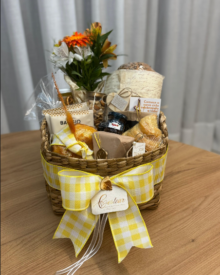
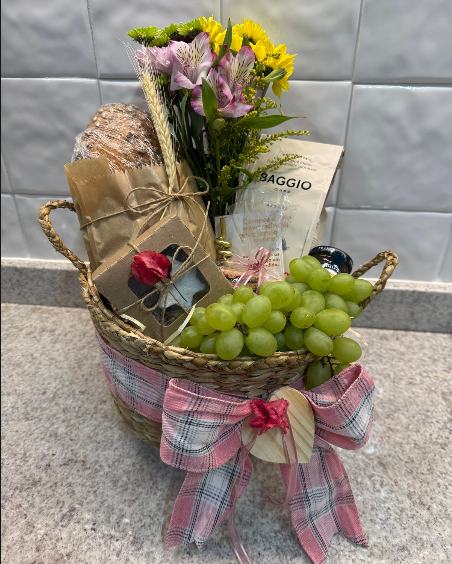

UM PRESENTE COM INTENÇÃO
Um carinho
feito pra você
em cada cesta.
Cestas artesanais para transformar um café, uma visita ou uma data especial em lembrança boa.
do seu jeito de celebrar.

afeto✳
Escolhas artesanais
com produtos selecionados
Montagem personalizada
no seu estilo e ocasião
Atendimento próximo
direto com a Cestear
CATÁLOGO DE REFERÊNCIAS
Um começo bonito
para cada ocasião.
Explore as sugestões da Cestear. Gostou de uma? Selecione e converse com a equipe para confirmar disponibilidade ou personalizar cada detalhe.
Valores e composições transcritos do catálogo do WhatsApp consultado em 19/11/2026. Podem mudar; confirme disponibilidade, ingredientes e preço com a Cestear. Algumas fotos estão identificadas pela própria loja como ilustrativas.

IDEIAS QUE VIRAM PRESENTEDO SEU JEITO
Uma ocasião.
Uma cesta com a sua cara.
As sugestões do catálogo são um ponto de partida. A equipe também pode montar uma cesta personalizada de acordo com a ocasião e as suas preferências.
- 01 Conte para quem e para qual momento
- 02 Escolha itens, cores e pequenos detalhes
- 03 Confirme a composição e a disponibilidade
CESTEAR · TAQUARA/RS
O cuidado também
faz parte do presente.
A Cestear cria cestas para celebrar e presentear, com produtos escolhidos e combinações que podem ganhar um toque pessoal. Esta vitrine organiza as sugestões em um só lugar e leva cada escolha para uma conversa direta com a equipe.
Escrever para a CestearPERTO DE VOCÊ
Feito em Taquara.
Pronto para celebrar.
Converse com a equipe para combinar retirada, entrega e o melhor horário para o seu pedido.
Abrir Taquara no Maps *Horário exibido no perfil comercial; confirme antes de visitar.RS · BRASIL✳✿— — —